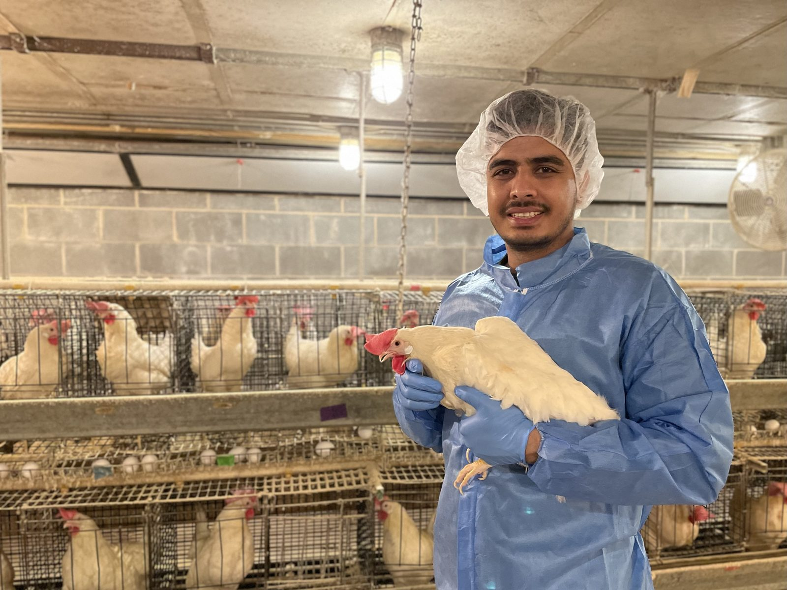
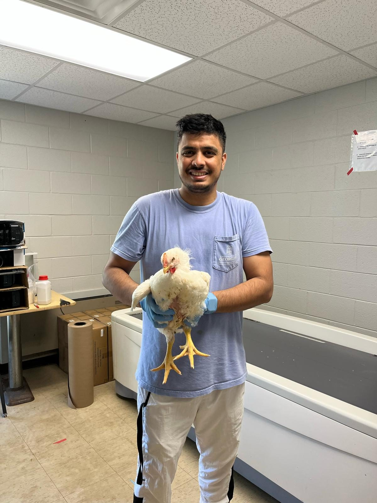
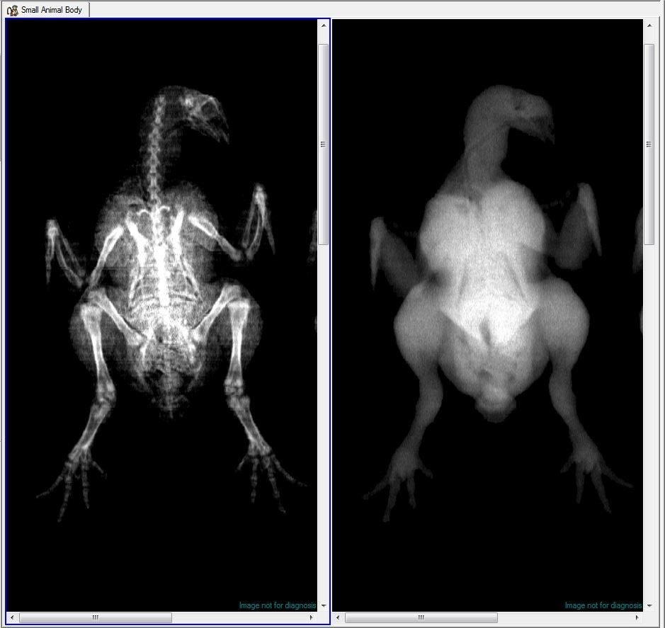
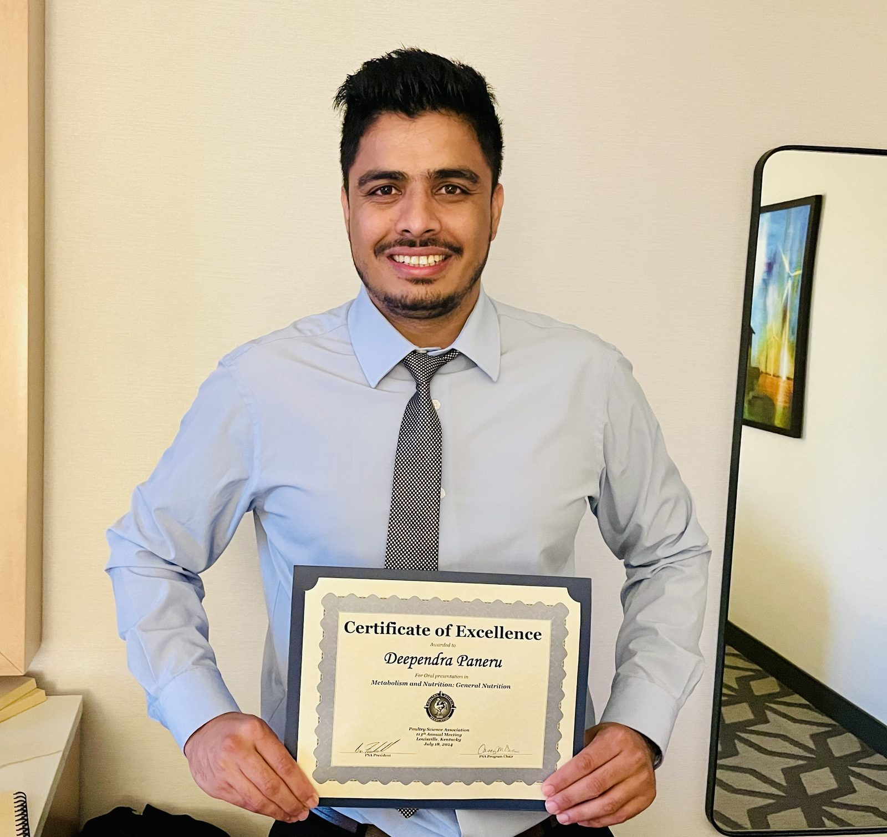
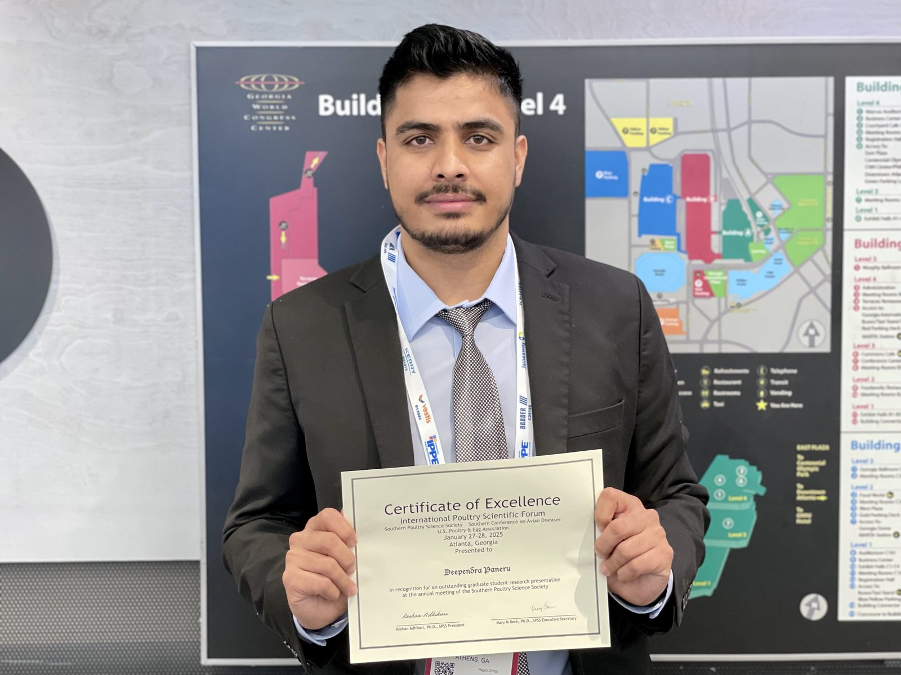

2026 — Present
Postdoctoral Research Associate
Department of Poultry Science, University of Georgia · Athens, GA

Postdoctoral Research Associate · Dept. of Poultry Science, UGA
Poultry nutrition and health researcher (Ph.D., Poultry Science) working on intestinal integrity, skeletal biology, mycotoxicology, and the gut microbiome — for bird health, welfare, and resilience.
Live from OpenAlex · Site last updated
I'm a poultry nutrition and health researcher specializing in intestinal integrity, skeletal biology, mycotoxicology, and the gut microbiome. I develop nutritional and management strategies that strengthen bird health, welfare, productivity, and resilience to disease and environmental stress.
I pair gut-permeability assays, qPCR, ELISA, and flow cytometry with DEXA and micro-CT imaging of bone and body composition — connecting bench-level mechanism to the welfare and management questions of modern production.

From the intestinal barrier and the skeleton to the microbiome — with a growing focus on welfare and management.

DEXA and micro-CT let me measure bone mineralization, microarchitecture, and whole-body composition across nutritional and disease challenges.
Barrier function under dietary and pathogen stress.
Deoxynivalenol and aflatoxin B1 on growth, gut, and bone.
Bone and composition by DEXA and micro-CT.
Cecal community shifts via QIIME 2 and metagenomics.
Immune response to enteric challenge by flow cytometry.
Translating physiology into welfare and management.
Research, conferences, and the people I work alongside. Tap any photo to enlarge.
Led a departmental project on the regeneration and conservation of heritage poultry breeds, coordinating breeding management, data collection, and health monitoring in support of the department’s research, teaching, and outreach missions.
Volunteered in the organization and execution of international workshops and academic events hosted by the Department of Poultry Science, University of Georgia.


Ad hoc reviewer for Poultry Science, Veterinary and Animal Science, Veterinary Medicine and Science, Frontiers in Physiology, Frontiers in Veterinary Science, Scientific Reports, BMC Microbiology, and the Pakistan Journal of Zoology.